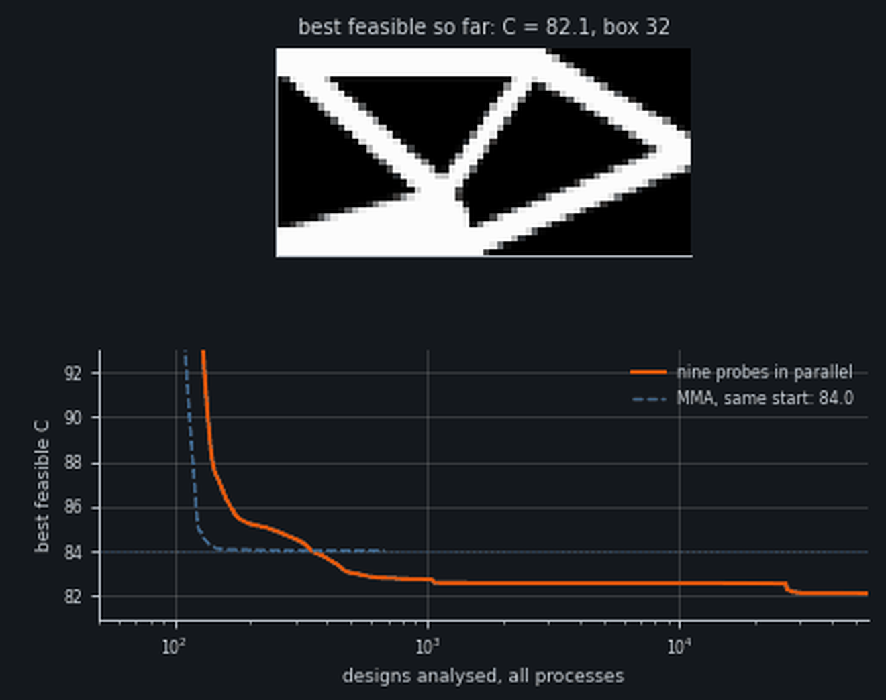
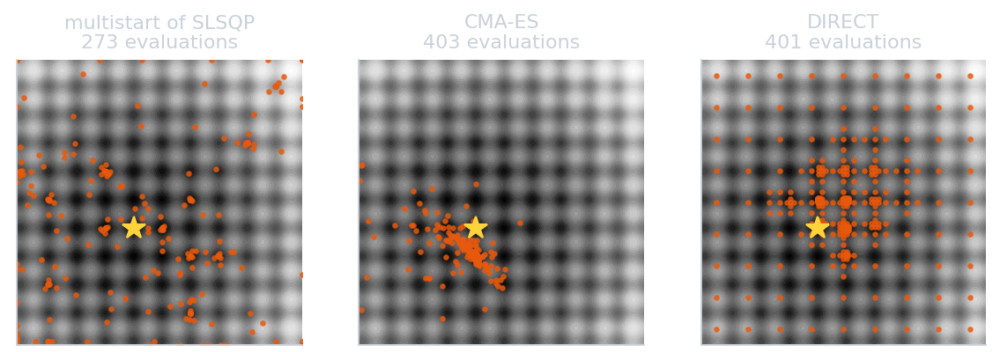

gemseo-box-subdivision
Box subdivision
Choosing where to look in a multimodal landscape, one local solve at a time
[Presenter name] · [Event, date]
A bracket, and a valley it did not leave

84.0
gradient-based optimizer (MMA) from a sensible start: walks downhill, then stops
82.1
box subdivision on the same problem (compliance, lower is stiffer)
2 / 14 · short cantilever of the GGP package, 18 bars, 108 variables
A local solver finds the valley it starts in
Released at 3.35, the ball settles at 8.95.
Only a start in the middle valley reaches 0.
Going downhill is easy. Choosing where to start is not.
3 / 14 · Rastrigin in one variable
Where the usual methods spend their evaluations

A local solve with gradients is rich information. Can it tell us where to solve next?
4 / 14 · Rastrigin 2D, budget of 400 equivalent evaluations
From “where to start?” to “which box?”
Cut each axis into intervals. Solve only inside one box at a time.
A box is named by one row of switches per axis.
100 000
boxes in 5 variables
50
switches: they add, boxes multiply
5 / 14 · ten intervals per variable
Each solve also says which way is downhill
Pressed on a wall: the ground keeps going down beyond it. λ = 12.4
At a valley bottom: walls don’t matter. λ = 0
A value and a slope, for free.
6 / 14 · du/d(wall) = −λ, from the post-optimal analysis
Cuts: a master that reasons with every solve
Value + slope = a line of predictions: a cut.
Bound of a box = its highest prediction. Solve the box with the lowest bound.
Boxes 6, 10, 9, 8, then stop at −25.03.
7 / 14 · outer approximation (Duran & Grossmann, 1986)
On a non-convex landscape, cuts lie
Box 2 held −39.17. Box 6’s cut claimed at least 43.
Converged, no error, wrong.
Fix: lower every cut by κ away from its own box. κ = 60 finds −39.17.
8 / 14 · convexification term κ α(α − 1): zero at every real box
Fixed κ: too small lies, too large enumerates
κ = 0: 4 boxes, wrong.
κ = 60: 8 boxes, right.
κ = 100: all 10.
In 5D: 100 000 boxes for a budget of about 50 solves.
The run ends long before the exploration does.
9 / 14 · and the useful range of κ depends on the problem
Correct only what the data contradict
Adaptive repair
Each cut must pass δ below every observed value; violated slopes are fixed by least squares. Sharp bound, no guarantee.
Swept convexity
One κ per parallel probe, a ladder from trusting to skeptical, its top set by the data. Nothing to tune.
10 / 14 · the sweep reached the optimum on Rastrigin and Ackley from every start
A real run: four probes per round
Round 0: no cuts yet, an initial design of 4 boxes.
Then 3 probes on the row or column of the best box, 1 jump.
0 after 154 evaluations; 20 of 100 boxes.
11 / 14 · default settings: adaptive repair, trust region of 2, 4 parallel probes
Five variables, 2500 evaluations, five starts
| runs reaching the optimum | box subdivision | multistart | CMA-ES | DIRECT |
|---|
| Styblinski-Tang | 5/5 · 789 | 5/5 · 2340 | 3/5 · 1401 | 5/5 · 2505 |
| Rastrigin | all* | 0/5 | 0/5 | 0/5 |
| Ackley | 3/5 | 0/5 | 5/5 · 2001 | 0/5 |
| Griewank | 0/5 | 0/5 | 0/5 | 0/5 |
It wins when the grid separates the valleys, and loses when it doesn’t.
12 / 14 · cell: runs reaching the optimum · evaluations · * ten intervals per axis (README); the comparison table’s variant: 2/5
Back to the bracket
108 variables; each bar’s pose cut in 10: 540 switches. 9 boxes per round, MMA inside each.
| method | C |
|---|
| MMA | 84.0 |
| multistart of MMA, 63 | 83.0 |
| box subdivision | 82.1 |
13 / 14 · comparable number of designs; about half the wall time of the multistart
The idea in three lines
1. Turn “where should I look?” into a discrete choice of box.
2. Let each local solve vote, through its multipliers, on where to look next.
3. Keep the votes honest: repair or sweep, never a fixed κ.
Only some variables bumpy: subdivide those.
Grid density: count valleys on random line scans.
One valley too wide: zoom with hierarchies.
Zoom without forgetting: digits in one master.
14 / 14 · pip install gemseo-box-subdivision · simoneconiglio.github.io/gemseo-box-subdivision